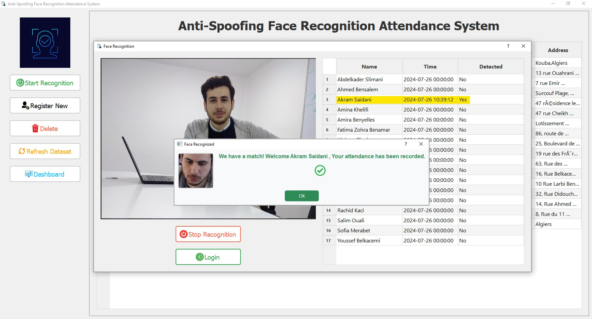
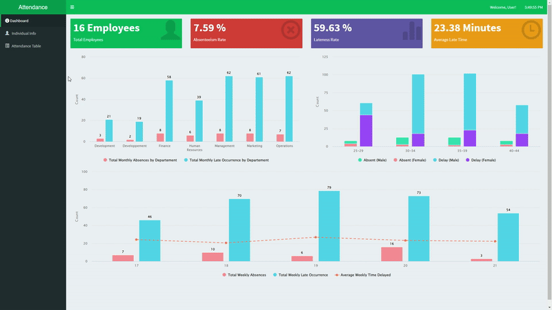
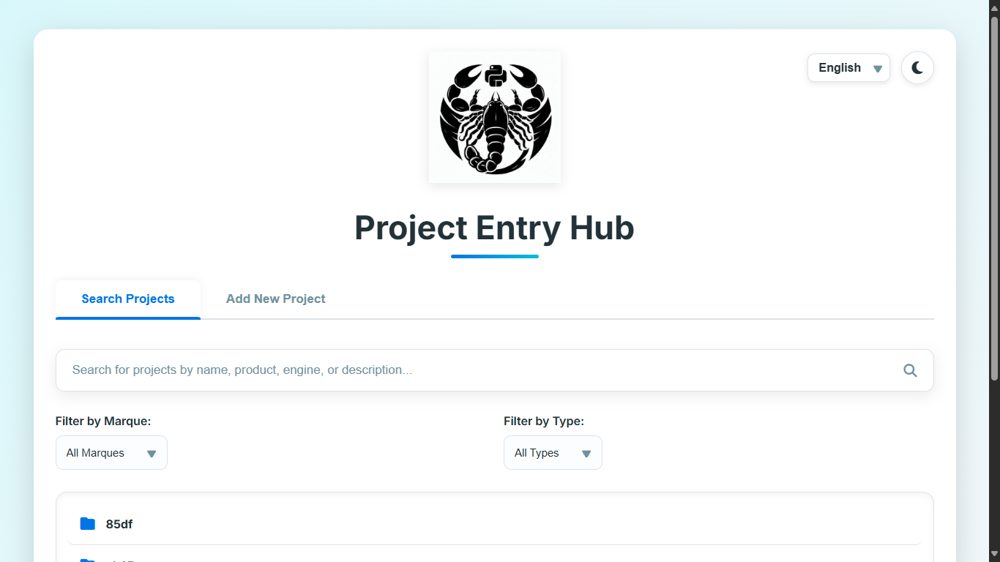
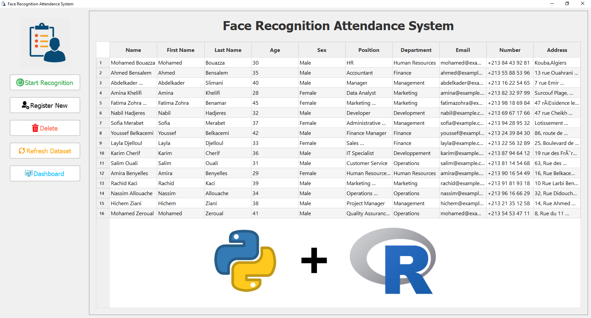
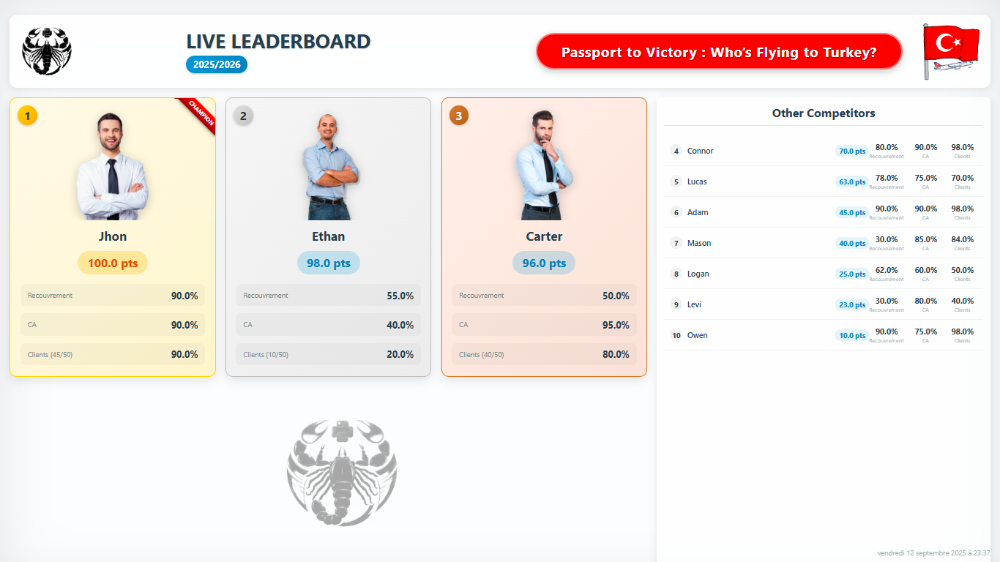

[In 1]: # computer_vision

Anti-Spoofing Face Recognition Attendance System
Système robuste de gestion de présence par reconnaissance faciale avec détection anti-fraude (liveness detection) en temps réel.
Titulaire d'un Master 2 en Statistiques et Data Science et actuellement en Master 2 Mathématiques et Applications à l'Université Paris-Saclay, je suis passionné par l'analyse de données, la vision par ordinateur et le NLP. J'ai acquis une expérience pratique en modélisation statistique, apprentissage automatique et entraînement de modèles de Deep Learning, renforcée par les certifications en Machine Learning (Stanford) et Google Data Analytics.
Approche centrée sur l'analyse de données pour la prise de décision.
Passionné par la transformation de défis complexes en solutions claires.
Toujours à l'affût des nouvelles technologies et méthodologies.
J'apprécie le travail d'équipe et le partage d'idées pour innover.
force.skills.graph · hover to explore

Système robuste de gestion de présence par reconnaissance faciale avec détection anti-fraude (liveness detection) en temps réel.

Application de tableau de bord interactive construite avec R Shiny pour analyser et visualiser des données de présence.

Application web pour aider les entreprises d'ingénierie à organiser et gérer leur base de données de projets techniques avec filtres avancés.

Application hybride Python & R combinant reconnaissance faciale en temps réel et tableau de bord analytique pour le suivi RH.
Fine-tuning d'un modèle RoBERTa pour la classification de reviews, atteignant une haute précision de catégorisation par transfer learning.

Tableau de bord en temps réel pour suivre les performances d'équipes commerciales pendant des concours, connecté à Google Sheets.
SARL Maouda Distribution
New Digital Way
Icosnet
Université Paris-Saclay
Formation de haut niveau en statistiques, machine learning et analyse de données.
École Nationale Supérieure de Statistique et Économie Appliquée
Formation fondamentale en mathématiques, statistiques et programmation.
Vous avez un projet en tête ou souhaitez
simplement échanger sur la data ?
Paris, France